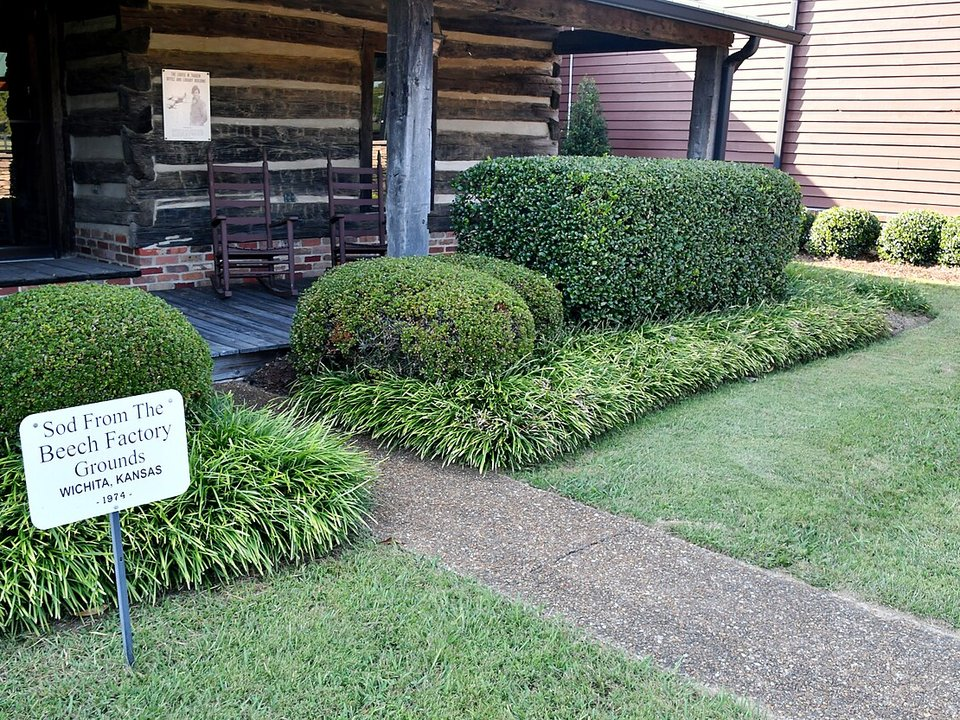

Lynchburg · Country inn
Lynchburg Country Inn
A simple inn near the square in Lynchburg.
Official details for Lynchburg Country InnStaggerwings and Tennessee whiskey.
Tullahoma is a small Tennessee town with one of the best aviation stops in the South: the Beechcraft Heritage Museum, right on the airport, with a hangar full of Staggerwings and Bonanzas. Land at Tullahoma Regional, tour the museum, then drive 20 minutes to Lynchburg for the Jack Daniel’s distillery and a family-style midday dinner at Miss Mary Bobo’s. Visit George Dickel in Cascade Hollow and spend an afternoon on Tims Ford Lake.

Time illustration: direct distance at 150 KTAS plus 15 minutes for departure and arrival, matching the discovery page. Use ForeFlight for your actual flight plan.
KTHA, Tullahoma Regional/William Northern Field, is a non-towered airport at 1,084 feet with a 5,501-foot main runway and the Beechcraft Heritage Museum on the field.
Tullahoma Regional Airport, Tullahoma, TN
The airport authority runs the fuel. Arnold Air Force Base and its restricted airspace are just east; brief it carefully. The field gets very busy during the Beechcraft fly-in each October. No live fuel price is shown.
Southeast flying: summer afternoon thunderstorms and haze, morning fog in the cooler months, spring squall lines, and tropical weather from June to November. About 380 nm from Myrtle Beach.
Rates and availability need travel dates. The October fly-in fills the area.
A simple inn near the square in Lynchburg.
Official details for Lynchburg Country InnCabins and lake access near Tullahoma.
Tennessee State Parks for Tims Ford State ParkLodging around Lynchburg.
Visit Lynchburg for More places to stayPrices and availability for your dates, through our partner Stay22. This is an affiliate link: we may earn a commission at no cost to you. The picks above are never paid.
Reserve weekend dinners.
A family-style midday dinner in an 1867 boarding house; reserve ahead.
Official details for Miss Mary Bobo’s RestaurantRestaurants on the Lynchburg square.
Visit Lynchburg for More restaurantsBook distillery tours ahead.
Staggerwings, Bonanzas and Beech history, on the airport.
Beechcraft Heritage MuseumThis prototype links to the local visitor site. It does not yet match events to your travel dates.
The Beechcraft Heritage Museum’s annual gathering.
Beechcraft Heritage Museum for Beechcraft fly-inGreen hills and mild weather.
Visit Lynchburg for SpringDistillery season and cool days.
Visit Lynchburg for FallCheck the local calendar when choosing a weekend, and confirm dates and tickets with the organizer.
A sample whiskey-country weekend. No bookings or availability confirmed.
Land at KTHA mid-morning.
Beechcraft Heritage Museum, on the field.
A short walk, then back to the airport.
Land at KTHA, subject to weather and your actual flight plan.
Beechcraft Heritage Museum.
Dinner in Tullahoma.
Jack Daniel’s tour.
Dinner at Miss Mary Bobo’s, then the square.
Sunset on Tims Ford Lake.
George Dickel.
Allow time at the FBO before departure.
Afternoon thunderstorms are common in summer; leave in the morning.
Jack Daniel’s tour.
Explore.
Dinner in town.
These details make the difference between an appealing list and a usable getaway.
Lodging, Miss Mary Bobo’s, then tours.
About 375 nm from Myrtle Beach.
Stay clear of Arnold AFB restricted airspace.
April to June, September to November.
Research-based selections, not personal-visit endorsements. Researched November 1, 2026. Confirm hours, prices and availability directly with each place before booking. Spotted something out of date, or have a favorite we missed? Email us at hello@wingawayweekends.com.
WingAway Weekends helps you discover the destination. Use ForeFlight and current official aviation information for route, performance, weather, NOTAMs and preflight decisions. Flight planning and PIC responsibility stay with the pilot.